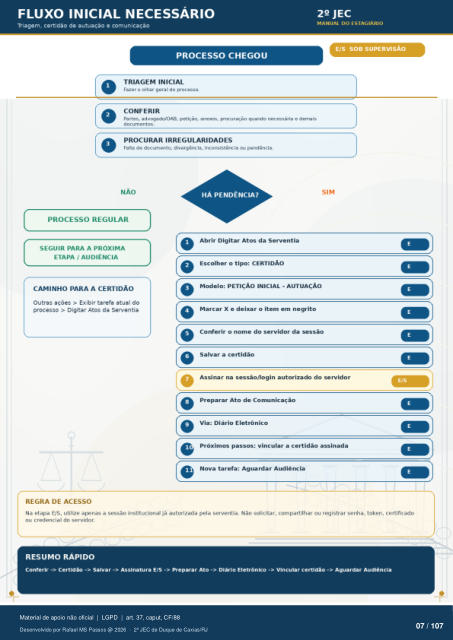

Transcrição automática em português, ainda não revisada. Confira grafia, prazos e termos jurídicos na imagem e no PDF antes de utilizar.
FLUXO INICIAL NECESSÁRIO
Triagem, certidão de autuação e comunicação
PROCESSO CHEGOU
TRIAGEM INICIAL
Fazer o olhar geral do processo.
CONFERIR
hrtes, advmado/OAB. petição, anexos, procuração quarKIo necessária e demais documentos.
PROCURAR IRREGULARIDADES
Falta de documento, divergência. inconsistôncia ou pondôncia. 22 JEC
MANUAL DO ESTAGIÁRIO
E/S SOB SUPERVISAO
SIM NÃO
PROCESSO REGULAR
SEGUIR PARA A PROXIMA
ETAPA 1 AUDIÊNCIA
CAMINHO PARA A CERTIDÃO
Outras ações > Exibir tarefa atual do processo > Digitar Atos da Serventia
REGRA DE ACESSO
HÁ PENDÊNCIA?
Abrir Digitar Atos da Serventia Escolher o tipo: CERTIDÃO
9 9
9 9
PETIÇÃO INICIAL - AUTUAÇÃO
Marcar X e deixar o item em negrito Conferir o nome do servidor da sessão
Salvar a certidão Assinar na sessãonogin autorizado do servidor
Preparar Ato de Comunicação Via: Diário Eletrônico
Próximos passos: vincular a certidão assinada Nova tarefa: Aguardar Audiência
Na etapa E/S. utilize a sessão institucional já autorizada pela serventia. Não solicitar. compartilhar ou registrar senha, token, certificado ou credencial do servidor.
RESUMO RÁPIDO
Conferir -> Salvar -> Assinatura E/S -> Preparar Ato -> Diário Eletrônico Vincular certidão Aguardar Audiência
Ver também o infográfico original (página 7)
